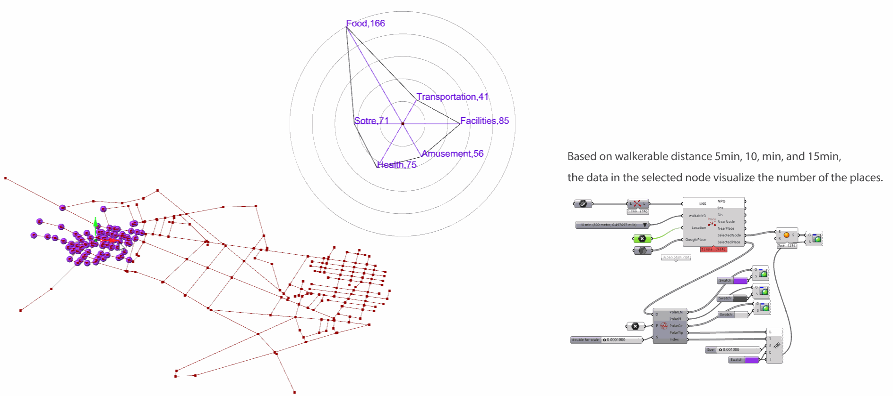
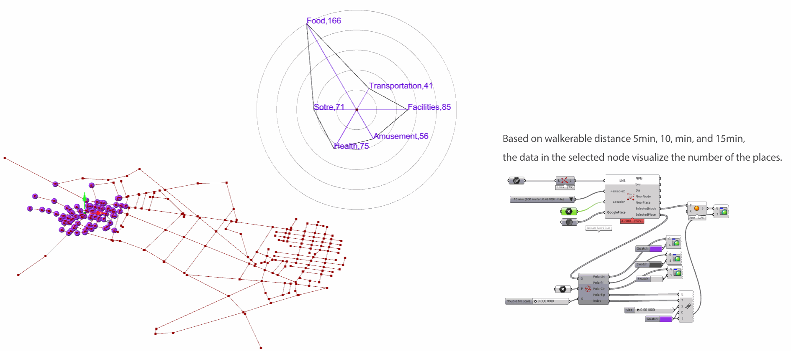
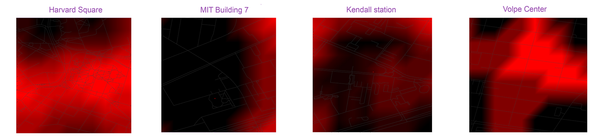

INTRODUCTIVE VIDEO
BACKGROUND
Energy is very essential resource in modern societies, Every major city in the earth consumes diverse type of energy such as fossil fuel, electrical energy, and etc at the expanse of our environment. Climate change has beome more important issu on modern society. However, everyday life , we need certin amout of energy to guarantee our live. Among the major energy consumption in cities, transform is major issue and it could be reduced.

Urban population is a lager than rula areas, is concentrated on a area to deal with in term of urban mobility.

In this project, mobility energy is considered as numerical data in urban context and compute them to find better way of understading tranfortation. Based on walkerable distance, the data in the graph are computed.

analysis methods for mobility energy per person
within 1 min (80 meter, 0.0497097 mile)
within 5 min (400 meter, 0.2485485 mile)
within 10 min (800 meter, 0.497097 mile)
within 20 min (1,600 meter 0.9941939 mile)

Data from Google Place
Google Place data are mapped as Graph and pixel covering Kendall Station so that the it internally compute and
Type of query:
'parking', 'veterinary_care', 'airport', 'plumber', 'roofing_contractor', 'atm', 'meal_takeaway', 'hair_care', 'insurance_agency', 'school', 'synagogue', 'stadium', 'movie_theater', 'doctor', 'zoo', 'electrician', 'establishment', 'funeral_home', 'spa', 'aquarium', 'storage', 'casino', 'park', 'courthouse', 'hospital', 'subway_station', 'painter', 'moving_company', 'movie_rental','embassy', 'fire_station', 'gym', 'bicycle_store', 'local_government_office', 'book_store', 'police', 'florist', 'museum', 'lawyer', 'car_rental','real_estate_agency', 'physiotherapist', 'electronics_store', 'hindu_temple','car_dealer', 'jewelry_store', 'gas_station', 'mosque', 'liquor_store', 'campground', 'library', 'university', 'accounting', 'travel_agency', 'finance', 'locksmith', 'bank','convenience_store', 'health', 'church', 'bakery', 'lodging', 'laundry', 'shopping_mall', 'dentist', 'store', 'cemetery'

query reduction
For Third place in Cambridge, MA
Site Selection
For Third place in Cambridge, MA
Data Visualization
Mobility for Third place on each site

Mobility for Third place on each site
 

Comparison
Mobility for Third place on each site

comparison for 5min, 10min, and 15min

Heat Map for Third Density
